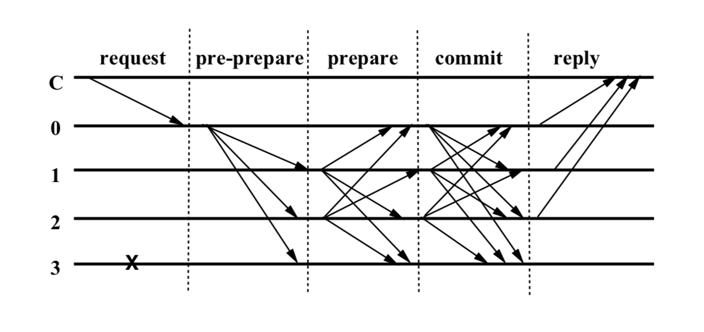

PBFT in Blockchain Doesn't Require a Second Vote
Why does PBFT require two rounds of voting, and what is the role of the second vote? This question has puzzled me for a long time.
Reverse Deduction
From this perspective, in what situations does the second vote play a role? It only plays a role when the results of the second vote differ from the first. If the second vote’s results are strictly consistent with the first, then there is no need for a second vote.
So, in what situations would the second vote’s results differ from the first? Only when malicious nodes exist and deliberately cast different votes in the second voting phase will the results differ.
This is the conventional operational flowchart of traditional PBFT, where node 3 is a faulty or malicious node and does not respond from beginning to end:
This is the flowchart with the prepare phase removed, retaining only one voting process, where node 3 is still a faulty node and does not respond:

The key is that in this scenario, nodes 0, 1, and 2 are honest nodes and will never cast malicious votes or abstain, so the result of the commit phase will be consistent with the prepare phase. Thus, even if the prepare phase is removed, the system will eventually reach a consensus.
Node 3 has always been a malicious node. If, during the commit phase, any of the nodes 0, 1, or 2 cast votes that differ from the prepare phase, it means that there are more than one malicious node in the system, exceeding the fault tolerance capability.
Forward Understanding
To prove that the second vote is necessary is equivalent to stating that without the second vote, the system will not function correctly.
Logically, even if the second vote has various benefits, such as increasing the system’s fault tolerance through redundancy, quickly identifying errors, and promptly adjusting to a consistent state, it does not prove that the second vote is indispensable. For example, in the high-voted answer in Why is the commit phase in PBFT necessary?, many points are mentioned, but it mainly explains the design and function of the commit phase from a positive perspective.
A more plausible explanation I’ve found is here: PBFT: Why can’t the replicas perform the request after 2/3 have prepared? Why do we need the commit phase?
It mentions that without the commit phase, nodes cannot ensure the order of request execution during a view change.
I think the description on StackOverflow differs from the meaning of the high-voted answer. The high-voted answer implies that nodes’ execute phases become inconsistent without the commit phase, with some being faster and others slower. However, even with two rounds of voting, nodes might fail after the commit phase but before execution, causing execution differences. Therefore, this type of failure is not the critical scenario.
A more reasonable scenario is mentioned in the paper Practical Byzantine Fault Tolerance and Proactive Recovery. During a view change, different requests might use the same sequence number and be packaged into different views.
Replicas may collect prepared certificates in different views with the same sequence number and different requests. The commit phase solves this problem as follows.
Single Vote Process
This scenario is based on a single vote process, meaning there is no prepare phase.
Scenario Setup
View V1
- R1 proposes proposal P and broadcasts it to R2, R3, and R4.
- Proposal P is executed by R2, R3, and R4, but not by R1.
R1: –
R2: P –> Execute P
R3: P –> Execute P
R4: P –> Execute P
View Switch to V2
- Assume R1 fails, and the view switches to V2.
- R2 proposes a new proposal P’.
- R2 proposes a new proposal P’ and broadcasts it to R1, R3, and R4.
- The new proposal P’ is executed by all replicas.
R1: --
P' --> Execute P'
R2: P --> Execute P
P' --> Execute P'
R3: P --> Execute P
P' --> Execute P'
R4: P --> Execute P
P' --> Execute P'
Specific Example
Assume proposals P and P’ are operations on the same account balance:
- Proposal P: Increase account A’s balance by 10 units.
- Proposal P’: Decrease account A’s balance by 5 units.
The order of operations and results in views V1 and V2 are as follows:
View V1
R1: Account A balance = 100 (P not executed)
R2: Account A balance = 110 (P executed)
R3: Account A balance = 110 (P executed)
R4: Account A balance = 110 (P executed)
View V2
R1: Account A balance = 100 (P not executed) –> Execute P’ –> Account A balance = 95
R2: Account A balance = 110 (P executed) –> Execute P’ –> Account A balance = 105
R3: Account A balance = 110 (P executed) –> Execute P’ –> Account A balance = 105
R4: Account A balance = 110 (P executed) –> Execute P’ –> Account A balance = 105
Scenario Analysis
Let’s repeat this sentence: Different requests (R2) use the same sequence number (R1 thinks it is P) and are packaged into different views (P’). The same sequence number should refer to the execution order, indicating which request is to be executed at the current time.
In the above scenario, the final state is indeed inconsistent due to node A’s failure.
Two Votes
How does the two-vote process solve the problem in the above scenario?
- If node A fails after receiving the prepare result and before starting the commit, all nodes will not enter the execute phase.
- If node A fails after receiving the commit result and before starting the execute, node A will retry executing P based on the commit result, then execute P’.
Scenario Analysis
Did you notice a bit of unfairness in point 2?
In the two-vote scenario, node A can retry executing P based on the commit result.
In the single-vote scenario, node A does not retry executing P based on the commit result but directly executes P’.
Therefore, the two-vote process does not completely avoid state inconsistencies caused by node failures before execution. It merely adds an extra communication step to repeatedly confirm that other nodes’ states are consistent with its expectations, reducing the risk of state inconsistency.
The two-vote process advances the time for detecting faults. If node A does not cast a vote in the commit phase, other nodes will know that node A has failed, rather than waiting until they have executed and then discovering that node A has not executed. More confirmation means more security, reducing the cost of system rollback after execution and trying to agree as much as possible before execution. This is probably the greatest role of the two-vote process.
Overall, the second vote never seems to demonstrate an indispensable significance but merely brings some benefits and enhances system security. This issue might be similar to why TCP requires three-way handshakes to establish a connection. Wouldn’t two be enough? Perhaps even one is sufficient, but it could cause some problems. Three confirmations are sufficiently secure.
Stateless vs. Stateful
Why does PBFT require repeated confirmations to avoid state inconsistencies after execution? Maybe because any system rollback is a very cautious task, so the cost of communication before execution is increased.
Stateless
Returning to the single-vote scenario above, under what circumstances would the faulty node A not execute P’?
- Node A knows it failed to execute P.
- Node A must execute P before executing P’.
If these two conditions are met, even with a single vote, the same effect as the two-vote process can be achieved.
For stateless systems, if a node only records a final number, it would be quite difficult. The node knows it has not executed P and then receives a P’, but cannot distinguish whether P’ should be executed after P or is on an equal level with P.
The normal sequence is:
O -> P -> P'
For node A, knowing it has not executed P but receives a P’:
O -> (P')?
Should it execute? Node A does, and the state becomes chaotic.
For this reason, the execution in stateless systems is very cautious.
Stateful
Blockchain is a stateful system that naturally records its execution records (blocks) and enforces the ordering of requests (block hash, parent hash).
When a node receives a block, it can determine the position of the block, whether it should be executed in the current round, and whether it is missing blocks, promptly synchronizing the blocks from other nodes.
Therefore, in the context of blockchain, if the goal is merely to achieve the final state consistency of most nodes, a second vote is not necessary.
Doubts
Why does PBFT require two votes? This question lies at the knowledge boundary of GPT-4. If you ask it in detail, it will start making up answers, which is typical of GPT-4 when it does not know the answer.
With my limited internet search capabilities, I have never found a convincing reason that proves the second vote in PBFT is necessary.
After repeated deductions, the conclusion I have reached is that a second vote is not necessary, and a single vote can also achieve the same majority node consistency.
But why, for so long, have PBFT and various variants such as Tendermint and HotStuff retained the two-vote process? Why has no one ever questioned the necessity of the second vote?
Where exactly am I wrong? Perhaps my understanding of PBFT is not deep enough, and I have not touched upon the scenarios where the second vote truly plays a role. But if such scenarios exist, why can’t I find material that directly describes these scenarios?